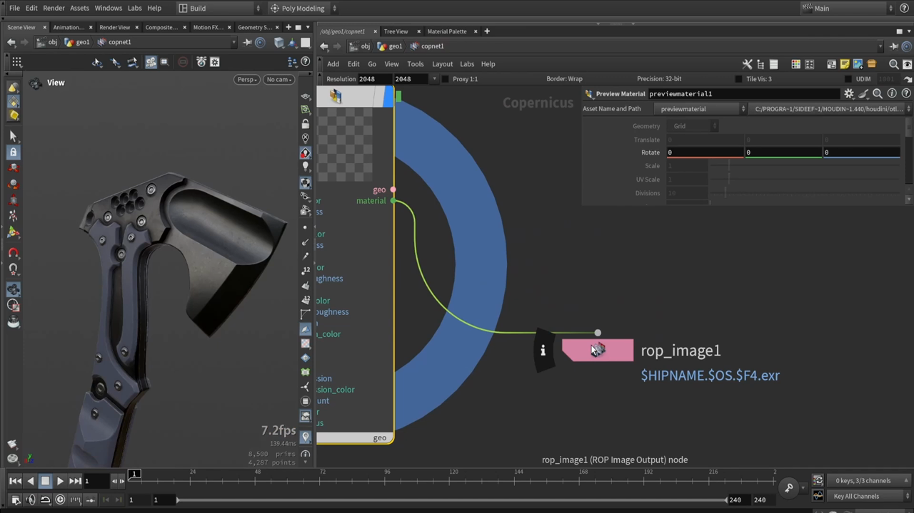
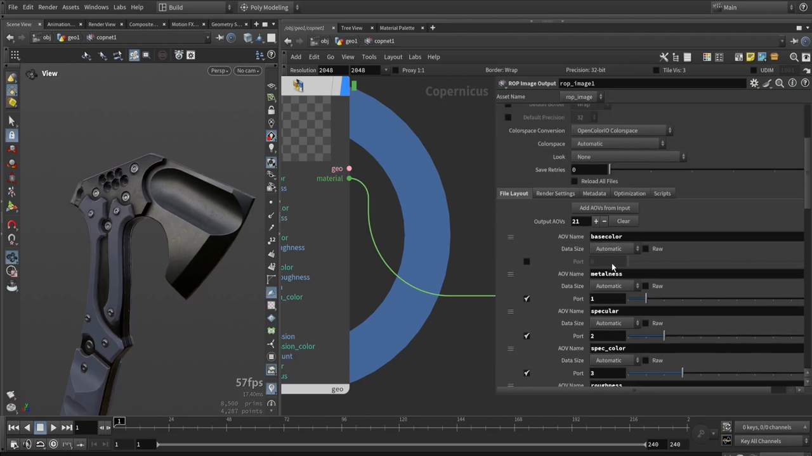

Houdini で斧を作る 10 — マテリアルを重ねて書き出す
出典: Axe Texturing: full breakdown of COPs texturing in Houdini （Simon Houdini さん / 1:04:35 / 英語）の 47:50〜最後まで。 このページは、上記の動画を見ながら自分用にまとめた日本語の学習メモです。作者公式の翻訳ではありません。 前回はラフネスと HDA のインターフェースでした。
この記事で扱うこと
シリーズ最終回です。作ったマテリアル HDA をマスクで重ね、 トライプラナーと汚しを足して、テクスチャとして書き出します。
1. メタルネスマップはマスクの流用で済む
思わず膝を打った部分です。
メタルネスマップは、私の場合ハンドルのマスクと同じものです。 この斧はハンドル以外すべて金属なので、 そのマスクがそのままメタルマップになります。
ハンドルのマスクをメタルマップの入力に繋ぐだけで、 ハンドル以外が金属という設定ができあがります。
2. ボルト用のパターンを作る
ボルトには引っかき傷のような質感を足していました。
- Tile パターンを使います
- 分割数を増やします
- 形（Shaping）を Circle にします
- サイズを潰して細長くします
- 位置にランダム性を足します
これでランダムな引っかき傷のような表面ができます。 量を増やせば傷が増えます。パターン同士をブレンドすることもできます。
重ねる順番
マスクでブレンドするとき、ボルトが先、それまでのマテリアルが後という順にしていました。 「こちらのほうが理にかなっています」とのことです。
3. Reference で「ほとんど同じマテリアル」を作る
中央パネルは刃と同じ金属ですが、少しだけ性質を変えたい。 そこで Houdini の Reference 機能を使います。
- 既存のマテリアルを参照します。参照されたパラメータは緑色になります
- 変えたい項目だけ右クリックして
Delete Channelします - その項目だけが切り離され、個別に設定できるようになります
まったく同じ金属のまま、一部のプロパティだけを上書きできます。
動画ではラフネスを掛け算で少し変えて、 「まだ光沢はあるけれど、少し抑えめ」という調整をしていました。
4. Triplanar — 設定を間違えると動かない
UV に依存しないテクスチャの貼り方です。
Triplanar ノードは position と world normal のデータを必要とします。
これはベイクから取れるので、ベイクノードで World Normal を有効にしておく必要があります。
つまずきどころ
既定のままだとうまく動きません。回避方法を見つけました。
ポイントはデータの範囲です。
| データ | 必要な設定 |
|---|---|
| Position | 相対位置（バウンディングボックスに合わせる） |
| World Normal | -1 から 1（0 から 1 ではありません） |
ここを直すとトライプラナーが正しく効きます。 テクスチャは Megascans のようなものでも、単純なノイズでも構いません。
できたものを既存の値と Multiply でブレンドすれば、
金属表面に自然なムラが乗ります。
5. 汚しを足す
やり方はこれまでと同じで、汚し用のマテリアルを1つ作って重ねます。
- ベースのマテリアルノードをコピーして
dirtと名付けます - そのままだと効果が極端なので、マスクで抑えます
- AO マップを使い、
Remapでレンジを反転します。必要なら強度も調整します - 一様になりすぎないよう
Slope by Directionを足し、フラクタルノイズを繋ぎます - スケールのスライダーで控えめに調整します
やりすぎないことが大事です。とても控えめにしたいところです。
くぼんだところに汚れが溜まる、という自然な見え方になります。
周波数の高いノイズを足すと細かいディテールが出ますが、
これも Remap で効き具合を制御できます。
「積み重ねていけるレイヤーシステム」として、
それぞれを個別に調整できるのが利点です。
6. ポストプロセス
最後に全体の調整です。ベースカラーだけを狙ったマップを差し込めます。
- Sharpen で細部を立たせます。動画では「少しかける程度」にしていました
- あとから部分的に制御することもできます
7. テクスチャを書き出す

ここまで作ったマテリアルは、それ自体が Cable 接続です。 中を見れば、すべてのマップがパックされているのが分かります。

ROP Image Output
書き出しには ROP Image Output を使います。
Add AOVs from inputボタンを押します。 これだけで21個の AOV が一括登録されます- 不要なものは右クリックで削除します。 あるいは全部消して、必要なものだけ手で足すこともできます
上の画像に basecolor / metalness / specular /
spec_color / roughness …と並んでいるのが見えます。
ファイル名にレイヤー名を入れる
ファイル名にはレイヤー名を表す特殊な指定を使います。
axe のような名前のあとにそれを付けて .png とすると、
AOV ごとに自動で名前が付いたファイルが書き出されます。
解像度やカラースペースをここで上書きすることもできます。 ノーマルマップなどでカラースペースの扱いは重要なので、 知っておくとよい、と補足されていました。
おわりに
動画の締めくくりで、こう話されていました。
ここまでで、この仕組みがどう動くのかの全体像はつかめたと思います。 とても強力なマテリアルツールを作りました。 これは単純な例なので、もっと良くしていけます。
Substance Painter や Designer のような感覚で、 Houdini の中でプロシージャルにモデルをテクスチャリングできます。 自分のワークフローやパイプラインに合ったものを作れます。
この仕組みは複数のモデルで使い回せる作りになっています。
この記事のまとめ
- メタルネスマップはハンドルのマスクの流用で済みました
- ボルトの傷は Tile パターン（Circle・位置をランダム化）で作れます
- Reference して
Delete Channelすると、一部だけ違うマテリアルが作れます Triplanarは World Normal を -1 から 1 にしないと動きません- 汚しは AO を反転して使い、
Slope by Directionで一様さを崩します - 書き出しは
ROP Image OutputのAdd AOVs from inputで21個が一括登録されます - ファイル名にレイヤー名の指定を入れると、AOV ごとに自動で書き出されます
- カラースペースの上書きはノーマルマップで重要です
斧のモデリングからテクスチャリングまで、全10回はこれで完結です。 最初から読む場合は第1回 参照画像とカーブで輪郭を取るへ。